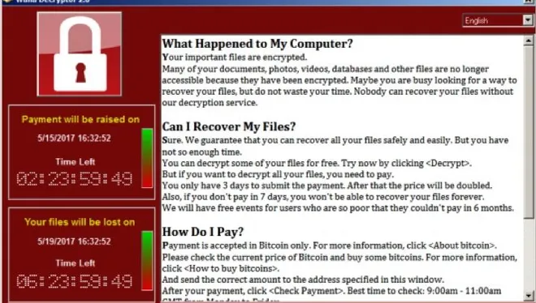
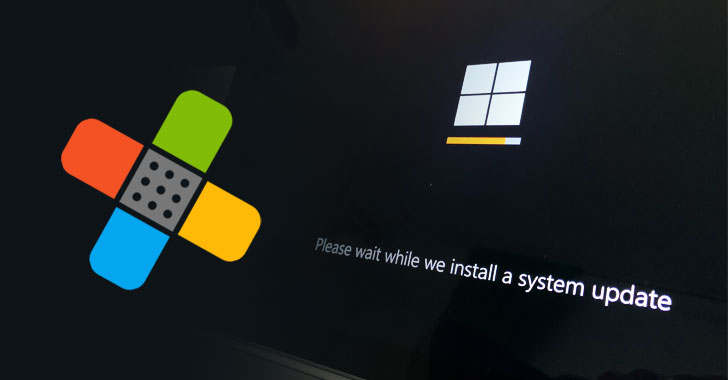

RansomeWare :
The wannacry Attack
WannaCry is an example of crypto ransomware, a type of malicious software (malware) used by cybercriminals to extort money.

Ransomware does this by either encrypting valuable files, so you are unable to read them, or by locking you out of your computer, so you are not able to use it. Ransomware that uses encryption is called crypto ransomware. The type that locks you out of your computer is called locker ransomware. WannaCry targets computers using Microsoft Windows as an operating system. It encrypts data and demands payment of a ransom in the cryptocurrency Bitcoin for its return.
This ransomware attack spread through computers operating Microsoft Windows. User’s files were held hostage, and a Bitcoin ransom was demanded for their return. Were it not for the continued use of outdated computer systems and poor education around the need to update software, the damage caused by this attack could have been avoided.
Components of Wannacry:
- An application that encrypts and decrypts data
- Files containing encryption keys
- A copy of Tor
How does WannaCry infect PCs?
The attack vector for WannaCry is more interesting than the ransomware itself. The vulnerability WannaCry exploits lies in the Windows implementation of the Server Message Block (SMB) protocol. The SMB protocol helps various nodes on a network communicate, and Microsoft's implementation could be tricked by specially crafted packets into executing arbitrary code.
It is believed that the U.S. National Security Agency discovered this vulnerability and, rather than reporting it to the infosec community, developed code to exploit it, called EternalBlue. This exploit was in turn stolen by a hacking group known as the Shadow Brokers, who released it obfuscated in a seemingly political Medium post on April 8, 2017. Microsoft itself had discovered the vulnerability a month prior and had released a patch, but many systems remained vulnerable, and WannaCry, which used EternalBlue to infect computers, began spreading rapidly on May 12. In the wake of the outbreak, Microsoft slammed the U.S. government for not having shared its knowledge of the vulnerability sooner.
Even if a PC has been successfully infected, WannaCry won't necessarily begin encrypting files. That's because, as noted above, it first tries to access a very long, gibberish URL before going to work. If it can access that domain, WannaCry shuts itself down. It's not entirely clear what the purpose of this functionality is. Some researchers believed this was supposed to be a means for the malware's creators to pull the plug on the attack. However, Marcus Hutchins, the British security researcher who discovered that WannaCry was attempting to contact this URL, believes it was meant to make analysis of the code more difficult. Many researchers will run malware in a "sandbox" environment, from within which any URL or IP address will appear reachable; by hard-coding into WannaCry an attempt to contact a nonsense URL that wasn't actually expected to exist, its creators hoped to ensure that the malware wouldn't go through its paces for researchers to watch.
Hutchins not only discovered the hard-coded URL but paid $10.96 to register the domain and set up a site there, thus helping blunt, though not stop, the spread of the malware. Shortly after being hailed as a hero for this, Hutchins was arrested for supposedly developing different malware in 2014. He has proclaimed his innocence.

WannaCry Patched? / but still exploitable !
As noted, Microsoft released a patch for the SMB vulnerability that WannaCry exploits two months before the attack began. While unpatched Windows 10 systems were vulnerable, the automatic update feature built into the OS meant that almost all Windows 10 systems were protected by May of 2017. The Microsoft SMB patch was initially only available for currently supported versions of Windows, which notably excluded Windows XP. There are still millions of internet-connected Windows XP systems out there — including at Britain's National Health Service, where many WannaCry attacks were reported — and Microsoft eventually made the SMB patch available for older versions of the OS as well. However, a later analysis found that the vast majority of WannaCry infections struck machines running Windows 7, an operating system Microsoft does still support.
Here's is a sample of wannacry ransomeware for reverse enginerring practice >
Download